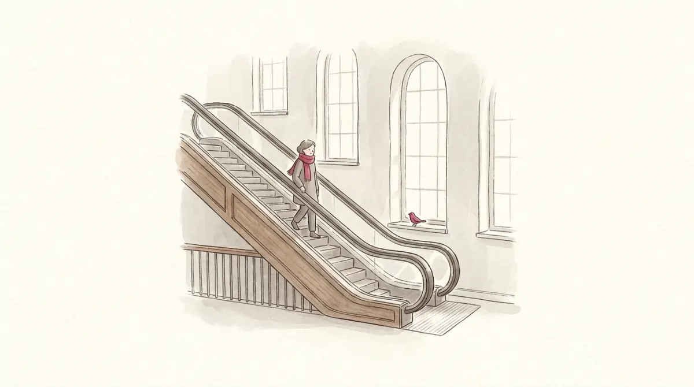

Run the mattress machine's money expansion once: output booms, then prices absorb it. Now ask the naughty question the slides open with: why not do it again? And again? Each expansion buys a temporary boom; a government that loves low unemployment could just keep pressing the button.
The answer is that the button wears out. Each press leaves prices permanently higher, and, more importantly, people start expecting the next press. Once expectations move, the boom part shrinks and the inflation part grows. To say that precisely, the course upgrades the SRAS curve: instead of flat (prices fully stuck), let it slope. Two stories from the slides justify the slope (sticky-price firms that preset prices using their expectations, and imperfect-information suppliers who briefly mistake general inflation for good luck in their own market), and both land on the same equation:
Y = Ȳ + α(P − EP)
Output rises above its natural level only when the price level comes in above what people expected (α is just a positive number measuring how strongly). To feel why, meet a gelato maker in January. She prints her summer menu with 3% inflation baked in, like everyone else in town. Summer arrives, and prices everywhere are up 6% instead. Her menu is now accidentally cheap: the queue at her window stretches down the street, and she scoops more gelato than she ever planned. Multiply her by every preset menu, catalog and wage contract in the country: a price level above expectations is a country full of accidentally cheap menus, all selling more than planned. Surprise is the active ingredient. And a few lines of algebra (rearrange, add a shock, subtract last year's price level, apply Okun's law) turn that supply curve into the most famous trade-off in macroeconomics.
Here is the picture to keep. The economy's inflation is your speed through a station, and everyone is standing on a moving escalator: expected inflation. Stand still and you travel at the escalator's speed: if everyone expects 6% inflation, wages and price lists get written with 6% baked in, and 6% is what happens. No effort required, no trade-off involved. That is inflation inertia: the escalator keeps moving at yesterday's speed because everyone builds yesterday into today's contracts.
Want to travel slower than the escalator? You must physically walk backwards against it, and in this station walking backwards means unemployment above the natural rate. There is no cushioned version: prices slow down only when the people setting them have weak hands, workers renewing contracts with a queue of unemployed behind them, shops discounting to move unsold stock. The slack is not a side effect of the brake; it is the brake. Walking forwards (a boom, u below natural) speeds you up beyond the escalator. And occasionally the station itself lurches: an oil shock shoves everyone forward a step regardless of the escalator.
π = Eπ − β(u − un) + ν
The slides give the two directions names worth memorizing: demand-pull inflation is the β term at work (hot demand pulls u below un and inflation up), and cost-push inflation is ν at work (costs shove prices regardless of demand).
The curve, live. Sliders move the escalator (Eπ), the supply shock (ν), and where policy parks unemployment; the dot is the economy. un = 6%.
Moving along the blue curve is the short-run trade-off: buy lower u, pay with higher π. But raise Eπ and the whole curve jumps up: the same unemployment now delivers more inflation. That jump is why the trade-off is temporary. Exploit it, expectations adapt, the curve moves up under your feet, and the bargain worsens. You cannot fool the same crowd twice.
Put adaptive expectations into the curve (Eπ = π−1) and read it again:
π = π−1 − β(u − un) + ν
With no shocks and u parked at un, inflation simply repeats itself, forever. Yesterday's inflation writes today's contracts, which produce today's inflation, which writes tomorrow's. The unemployment rate at which inflation neither speeds up nor slows down has a name the exam expects: the NAIRU, the Non-Accelerating Inflation Rate of Unemployment, and in this model it is exactly un. Park below it and inflation ratchets up every year; park above it and inflation grinds down. Which raises the operational question: grinding it down costs how much?
You are the central banker. Inflation is running at 6% and the target is 2%. Expectations are adaptive (the escalator always moves at last year's speed), β = 0.5, un = 6%. Each year, choose how hard to walk backwards. Okun's law converts your cyclical unemployment into lost GDP at 2% of GDP per unemployment point, and the bill is tallied as you go.
The sacrifice ratio is the price tag you just paid, standardized: percentage points of one year's GDP lost per point of inflation removed. Typical estimates sit around 5; the famous Volcker disinflation of the early US 1980s came in near 3.3. The mock asks you to compute one from a table, and the recipe never changes:
Mock-2 question 16. Inflation falls from 11.2% (1999) to 3.2% (2003). Okun's law: %ΔGDP = 2.1 − 1.3·(u − un). The table gives u each year with un = 5.0: u = 8.0, 9.1, 9.6, 10.5 across 2000-03.
1. Cyclical unemployment each year: 3.0, 4.1, 4.6, 5.5. Total = 17.2 points.
2. Okun converts each point to 1.3% of lost GDP: 1.3 × 17.2 ≈ 22.4% of a year's GDP.
3. Disinflation achieved: 11.2 − 3.2 = 8 points.
4. Sacrifice ratio = 22.4 / 8 ≈ 2.8 → the options say "around", and 2.5 is the closest. Done.
Sum the deviations, multiply by the Okun coefficient, divide by the inflation drop, pick the nearest option. Four steps, one point.
Mock-2 opens with Okun's law alone: y = 3.2 − 2.1x (y is GDP growth, x the change in unemployment), GDP expected to fall 1%. Solve: −1 = 3.2 − 2.1x → x = 4.2/2.1 = 2.0 points of extra unemployment. It is a one-variable linear equation wearing an economics costume.
Everything above assumed people look only backwards. The rational expectations school objects: people read the news. If the central bank credibly announces "we will do whatever it takes to reach 2%", firms and unions write 2% into contracts immediately, the escalator slows on its own, and inflation falls with little or no unemployment: the sacrifice ratio could be tiny. You pressed exactly that button in the game. The catch is the word credibly: announcements from central banks that have broken promises before move nothing. Credibility is the cheapest disinflation tool in existence, and the hardest to buy back once spent. (The professor links the IMF's 2023 piece on exactly this: anchored expectations make for softer landings.)
One more warning label. The natural-rate hypothesis beneath this whole chapter says demand policy moves output only temporarily; the economy always springs back to un. The pessimistic alternative is hysteresis: deep recessions may damage the spring itself. The long-term unemployed lose skills and lose their voice in wage setting (insiders bargain for themselves), so cyclical unemployment can calcify into structural, leaving un permanently higher. If that is true, recessions cost more than the sacrifice-ratio arithmetic admits, and governments should fight them harder. The evidence is unsettled; the exam only asks that you know what the word means.
| Phillips curve | π = Eπ − β(u − un) + ν |
| Adaptive expectations | Eπ = last year's π → inertia |
| NAIRU | the u at which π stays constant (= un) |
| Demand-pull / cost-push | the β term / the ν term |
| Okun's law questions | solve the given linear equation, nothing more |
| Sacrifice ratio | (Okun coeff × Σ cyclical u) ÷ total disinflation |
| Rational expectations | credible announcement lowers Eπ directly: cheap disinflation |
| Hysteresis | recessions can raise un itself (skills decay, insiders) |
One equation, one escalator, one four-step recipe. End of the course's hardest chapter.
Six questions, real mock-exam style: +1 right, −⅓ wrong, 0 skip.